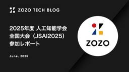

ZOZO TECH BLOG
https://techblog.zozo.com/
ZOZO TECH BLOG
フィード
KubeCon + CloudNativeCon Japan 2025参加&協賛レポート 2
2
ZOZO TECH BLOG
.table-of-contents ul ul { display: none; } .images-row { width: 860px !important; } こんにちは、技術戦略部のikkouです。2025年6月17、18日の2日間にわたり「KubeCon + CloudNativeCon Japan 2025」がヒルトン東京お台場で開催されました。ZOZOは今回シルバースポンサーとして協賛し、スポンサーブースを出展しました。 technote.zozo.com 本記事では、前半はZOZOのエンジニアが気になったセッションを紹介します。そして後半はZOZOの協賛ブースの様子と各社の…
5日前

2025年度 人工知能学会全国大会（JSAI2025）参加レポート
ZOZO TECH BLOG
はじめに こんにちは。ZOZO研究所の研究員の川島、ZOZOのデータサイエンティストの吉本・広渡です。2025年5月27日（火）から5月30日（金）にかけて大阪で開催された『2025年度 人工知能学会全国大会（JSAI2025）』に参加しました。この記事では我々が気になったセッションの内容をご紹介します。 はじめに JSAI2025とは セッションレポート [2M5-OS-37b] AIを用いた空間・時系列データのモデリング手法と応用 [2M5-OS-37b-01] （OS招待講演）地理空間情報を活用した経路計画 [2M5-OS-37b-02] 経路複雑性の活用による経路選択モデリングの性能改…
6日前

開発チームを自己組織化するために取り組んだ5つのTRY
ZOZO TECH BLOG
はじめに こんにちは、ZOZOMO店舗在庫取り置きサービスの開発を担当しているZOZOMO部OMOブロックの木目沢です。 現代のソフトウェア開発において、変化の激しい環境に柔軟に対応できるチーム作りは重要な課題です。特に複数のプロダクトを扱う開発チームでは、メンバー全員が自律的に動き、状況に応じて適切な判断ができる「自己組織化されたチーム」の実現が求められます。 ZOZOMO部OMOブロックでは、ZOZOMO店舗在庫取り置きを取り扱ってきましたが、現在は別のサービスの開発も行っています。そこで2つのプロダクトを扱う開発チームの自己組織化を目指し、昨年度に様々な取り組みを実施しました。結果的に、…
8日前
SlackとEmbeddingAPIを連携した、問い合わせ対応の担当部署自動アサインについて
ZOZO TECH BLOG
はじめに こんにちは、ZOZOTOWNアプリのバックエンド開発を担当している佐藤です。弊社では、お客様からの問い合わせに対して、開発エンジニアも調査に関わります。この記事では、OpenAI社のEmbedding APIを活用し、お客様への返信プロセスを簡略化した事例をご紹介します。 目次 はじめに 目次 課題 解決アプローチ 主な技術構成 補足事項 導入による効果 属人化の排除 作業コストの削減 得られた学び まとめ さいごに 課題 開発部門が対応するお客様への返信プロセスについて、既存の対応フローは以下の通りでした。 問い合わせを調査する上で、「対応チームへのエスカレーション判断が属人化して…
9日前
検索結果0件を回避するためのクエリ書き換えアプローチ
ZOZO TECH BLOG
はじめに こんにちは、データサイエンス部の朝原です。普段はZOZOTOWNにおける検索の改善を担当しています。 ZOZOTOWNには100万点を超える商品が存在し、毎日2700点もの新商品が追加されています。このような膨大な商品数を扱うZOZOTOWNにおいて、ユーザーが求める商品を見つけやすくするための検索機能は非常に重要です。 一方で、ファッションという日々ニーズが激しく変化するドメインにおいて、ユーザーのニーズを検索クエリから正確に把握し、適切な商品を提示することは困難を伴います。特に、検索システムにおいて検索結果が0件である（以下 0件ヒット）ことはユーザーにとって悪い体験となり、離脱…
11日前
【イベントレポート】「WWDC25 報告会 at LINEヤフー, ZOZO」を開催しました！
ZOZO TECH BLOG
はじめに こんにちは。Developer Engagementブロックの@wirohaです。6月19日に「WWDC25 報告会 at LINEヤフー, ZOZO」を開催しました。Appleの年次開発者イベント「WWDC25」で発表された最新技術や知見について、エンジニアがそれぞれの視点で共有するイベントです。本記事ではオフラインで開催した当日の様子をレポートします！ なお、本イベントはAppleがNDAを締結した開発者にのみ公表している情報を取り扱っており、参加はApple Developer Programに加入している方に限定して実施しました。本レポートもセッションの詳細は割愛し、雰囲気を…
11日前
商品クリック58%増・経由受注26%増の裏側 - Two-Towerモデル×Vertex AI Vector Searchで実現したZOZOTOWN ホーム画面のパーソナライズ
ZOZO TECH BLOG
はじめに こんにちは、データシステム部推薦基盤ブロックの棚本（@i6tsux）です。 ZOZOTOWNには1,600のショップ、9,000以上のブランド、100万点を超える商品が集まり、毎日2,700点もの新商品が追加されています。この膨大な商品の中から、1,000万人以上のユーザーそれぞれに「これだ」と思える商品を見つけてもらうーーそのためにパーソナライズは欠かせない技術です。 私たちのチームでは、単に好みに合う商品を見せるだけでなく、「新しい商品との出会い」も提供できるパーソナライズを目指しました。ホーム画面のモジュールに表示する商品をユーザーごとに最適な順番で並び替える仕組みを構築し、そ…
12日前
WWDC25現地参加レポート
ZOZO TECH BLOG
はじめに 技術戦略部の@ikkouです。XRとキーボードが好きで、特にVision ProとHHKB Studioの組み合わせが大好きです。現地時刻で2025年6月8日〜10日に対面形式で開催されたWWDC25のSpecial Eventに現地参加してきました。何名かの方に「何回も参加していそう」と言われましたが、初めての現地参加でした！ 本記事では、現地参加ならではのイベントや当日発表された内容について、私の視点から速報としてお伝えします。 はじめに WWDCとSpecial Event Schedule 事前準備 セミナー・カンファレンス参加支援制度 航空券と宿泊先の手配 Wallet p…
24日前
【イベントレポート】『若手エンジニアが語るリアルな実例 ~「技術負債」との戦い方・「技術資産」活かし方』を開催しました！
ZOZO TECH BLOG
はじめに こんにちは。Developer Engagementブロックの@wirohaです。5月29日に『若手エンジニアが語るリアルな実例 ~「技術負債」との戦い方・「技術資産」活かし方』を開催しました。SmartHR・ZOZO・TOKIUM・プレイドの4社から若手エンジニアが集い、技術負債や技術資産の活用について語り合うイベントです。本記事ではオフライン開催した当日のレポートをお届けします！ plaidtech.connpass.com
1ヶ月前
Monthly Tech Report 2025年5月
ZOZO TECH BLOG
ZOZO開発組織の2025年5月分の活動を振り返り、ZOZO TECH BLOGで公開した記事や登壇・掲載情報などをまとめたMonthly Tech Reportをお届けします。 ZOZO TECH BLOG 2025年5月は、前月のMonthly Tech Reportを含む計7本の記事を公開しました。振り返ってみると特にイベントの参加レポートが多い月でした。 techblog.zozo.com 登壇 Google Cloud Next 2025 Recap in ZOZO 5月12日に開催された「Google Cloud Next 2025 Recap in ZOZO」に、MA部の齋藤・吉…
1ヶ月前
Google I/O 2025参加レポート
ZOZO TECH BLOG
はじめに こんにちは、CTOブロックの堀江（@Horie1024）です。2025年5月20日〜5月21日にかけて、カリフォルニア州マウンテンビューにあるショアライン・アンフィシアターで開催されたGoogle I/O 2025（以下 I/O）に現地参加をしてきました。 Google I/Oとは Google I/Oは、Googleが毎年開催する開発者向けのカンファレンスで、最新の技術や製品、アップデートの発表、様々な領域についての技術セッションなどが行われる場です。私自身としては、2018年以来の現地参加となります。 今回のGoogle I/Oへの参加目的 今回のI/Oの参加目的は、Google…
1ヶ月前
「ユーザーごとに異なる施策効果」の推定手法の実用性を調べてみた話
ZOZO TECH BLOG
はじめに こんにちは、AI・アナリティクス本部、マーケティングサイエンスブロックの青山です。普段は、TVCM等の新規顧客向けの獲得施策や、既存顧客向けの施策など、マーケティング施策の効果検証を担当しています。施策の効果検証においては、平均的な施策効果だけでなく、ユーザーごとの施策効果の違いを捉えることが重要です。そうしたユーザーごとの施策効果を推定する手法は数多くある一方で、実データへの有効性が分からず利用されるケースは少ないという課題がありました。今回の記事では、この課題に対してユーザーごとの効果を求める手法の実用性を検証した取り組みをご紹介します。
1ヶ月前
言語処理学会第31回年次大会参加レポート
ZOZO TECH BLOG
はじめに こんにちは、データサイエンス部データサイエンス2ブロックのNishiyamaです。我々のチームでは、AIやデータサイエンスを活用したプロダクト開発のため、研究開発に取り組んでいます。今回、私は言語処理学会第31回年次大会に参加したため、参加レポートとして気になった発表をいくつか紹介します。
1ヶ月前
【イベントレポート】「After RubyKaigi 2025〜ZOZO、ファインディ、ピクシブ〜」を開催しました！
ZOZO TECH BLOG
はじめに こんにちは。Developer Engagementブロックの@wirohaです。5月13日に「After RubyKaigi 2025〜ZOZO、ファインディ、ピクシブ〜」を開催しました。本イベントは、RubyKaigi 2025のスポンサー企業であるZOZO、ファインディ、ピクシブの3社が共同で主催したAfterイベントです。 pixiv.connpass.com RubyKaigi 2025に参加した方も、参加できなかった方も楽しめる内容となっており、現地参加者とリモート参加者を合わせて多くのRubyistが集まりました。
1ヶ月前
【イベントレポート】「Google Cloud Next 2025 Recap in ZOZO」を開催しました！
ZOZO TECH BLOG
はじめに こんにちは。Developer Engagementブロックの@wirohaです。5月12日に「Google Cloud Next 2025 Recap in ZOZO」と題した、Google Cloud Next 2025の振り返りイベントをオンラインで開催しました。 zozotech-inc.connpass.com 本振り返りイベントの前提となるGoogle Cloud Next 2025の参加レポート記事を先月公開しています。現地の写真等もありますのであわせてご覧ください。 techblog.zozo.com
2ヶ月前
Monthly Tech Report 2025年4月
ZOZO TECH BLOG
ZOZO開発組織の2025年4月分の活動を振り返り、ZOZO TECH BLOGで公開した記事や登壇・掲載情報などをまとめたMonthly Tech Reportをお届けします。 ZOZO TECH BLOG 2025年4月は、前月のMonthly Tech Reportを含む計5本の記事を公開しました。特に「Kubernetes Event-driven Autoscaling（KEDA）で実現する夜間・休日のインフラコスト削減」はとても多くの方に読まれました。Google Cloudのコスト削減に興味をお持ちの方はぜひご一読ください。 techblog.zozo.com ZOZO DEVE…
2ヶ月前
RubyKaigi 2025 協賛&参加レポート
ZOZO TECH BLOG
Developer Engagementブロックの@ikkouです。2025年4月16日から18日の3日間にわたり愛媛県は松山市の愛媛県県民文化会館で「RubyKaigi 2025」が開催されました。ZOZOは例年通りプラチナスポンサーとして協賛し、スポンサーブースを出展しました。 technote.zozo.com 本記事では、前半はWEARのバックエンドエンジニアが気になったセッションを紹介します。後半では、ZOZOの協賛ブースの様子と各社のブースにおけるコーディネートを写真中心に報告します。 ZOZOとWEARとRubyKaigi ZOZOとWEARとMatzさん WEARのバックエンド…
2ヶ月前
Google Cloud Next '25 参加レポート
ZOZO TECH BLOG
こんにちは。MA部MA施策推進ブロックの吉川です。 2025年4月9日〜11日に開催されたGoogle Cloud Next 2025へ参加してきました。去年に続きアメリカ・ラスベガスで開催され、弊社からはMA部の齋藤・吉川・富永の3名が参加しました。なお、去年参加した様子は以下のテックブログで紹介しています。 techblog.zozo.com 今年は生成AI、データ、セキュリティの最新情報を紹介したセッションが多かった印象でした。本記事では、現地での様子と特に興味深かったセッションをピックアップして紹介します。 また、今回のテックブログで紹介できなかった内容などを含め、Recapのオンライ…
2ヶ月前
ZOZOTOWN iOSチームのスケールしやすい基盤作り〜SPM移行と効率化への挑戦〜
ZOZO TECH BLOG
はじめに こんにちは、ZOZOTOWN開発本部でZOZOTOWN iOSの開発を担当している小松です。私たちは、チームがより効率的かつスケールしやすい開発環境を構築するために、Swift Package Manager（以下SPM）への移行をはじめとして様々な取り組みを行いました。本記事では、その過程で得られた知見と実践した内容についてご紹介します。 背景と動機 ZOZOTOWN iOSは日々進化しています。加えて開発に携わる人が増えたことで、コンフリクトの増加やメンテナンスコストの増加などの課題が増え、開発基盤の改善が急務となりました。将来的なメンテナンスコストの削減と開発効率の向上を目指し…
3ヶ月前
Monthly Tech Report 2025年3月
ZOZO TECH BLOG
ZOZO開発組織の2025年3月分の活動を振り返り、ZOZO TECH BLOGで公開した記事や登壇・掲載情報などをまとめたMonthly Tech Reportをお届けします。 ZOZO TECH BLOG 2025年3月は、前月のMonthly Tech Reportを含む計11本の記事を公開しました。特に「ZOZOTOWNの推薦システムにおけるA/Bテストの標準化」は非常に多くの方に読まれました。ZOZOTOWNの推薦システムに興味をお持ちの方はぜひご一読ください。 techblog.zozo.com ZOZO DEVELOPERS BLOG try! Swift Tokyo 2025に…
3ヶ月前
Kubernetes Event-driven Autoscaling（KEDA）で実現する夜間・休日のインフラコスト削減
ZOZO TECH BLOG
はじめに こんにちは、データシステム部MLOpsブロックの木村です。MLOpsブロックでは、継続的にGoogle Cloudのコスト削減に取り組んでいます。その一環として、夜間や休日といった利用されていない時間帯にも稼働し続けることで発生していた、開発・検証・テスト環境の余分なコストに着目しました。 この課題を解決するために、MLOpsブロックではKubernetes Event-driven Autoscaling（以下KEDA）を導入しました。KEDAは、Kubernetes環境でイベントドリブンによるオートスケールを実現するオープンソースのツールです。KEDAにより利用されていない時間帯…
3ヶ月前
WEARでのRuby 3.3.6 YJITの効果と考察
ZOZO TECH BLOG
はじめに こんにちは！ WEARバックエンド部バックエンドブロックの小島（@KojimaNaoyuki）です。普段は弊社サービスであるWEARのバックエンド開発・保守を担当しています。 WEARのバックエンドはRubyで動作しており、Ruby 3.3.6にアップデートしたことを機にYJITを有効化しました。本記事ではWEARにYJITを導入した際の効果とその考察をご紹介します。
3ヶ月前
WEARバックエンドでの内定者アルバイト体験記
ZOZO TECH BLOG
はじめに はじめまして。2025年4月に株式会社ZOZOへ入社予定の坂元菜摘（@skysky0208）です。チームの皆さんにはもっちゃんと呼ばれています。 この記事では、約半年間WEARバックエンドチームにて参加した内定者アルバイトについての体験談をお話ししたいと思います。ZOZOに興味がある人はもちろん、内定者アルバイトに興味がある人、また入社に対して不安を抱いている人など、様々な方々の参考になれば幸いです！
3ヶ月前
WEARお試しメイク計測の明るさチェックを最適化してUXを改善した話
ZOZO TECH BLOG
はじめに こんにちは、計測プロデュース部の井上です。私たちはZOZOFITやZOZOMATといった計測系プロダクトの開発PM、データ収集、精度検証などサービス構築から、UI/UXの分析・評価などの幅広い業務を行っております。 あなたの「似合う」が探せるファッションコーディネートアプリ「WEAR by ZOZO」では、2024年5月に「WEARお試しメイク」機能をリリースしました。ARを活用し、WEARのユーザーが投稿したメイクを自分の顔で試すことができます。 この機能の開発にあたり、明るさチェックの閾値調整が大きな課題となりました。本記事では、その最適化プロセスとUX向上の取り組みについて解説…
3ヶ月前
ZOZOTOWNの推薦システムにおけるA/Bテストの標準化
ZOZO TECH BLOG
はじめに こんにちは。データシステム部推薦基盤ブロックの佐藤（@rayuron）と住安（@kosuke_sumiyasu）です。私たちはZOZOTOWNのパーソナライズを実現する推薦システムを開発・運用しています。 ZOZOTOWNでは、様々な改善施策の効果を検証するためにA/Bテストを実施していますが、そのプロセスには多くの工程があり、効率化の余地がありました。本記事では、A/Bテストの工程を自動化・標準化し、効率化を図った取り組みについてご紹介します。 はじめに 背景 課題 1. A/Bテスト設計書のテンプレートがない 2. A/Bテストの開催期間が決め打ち 3. 有意差検定をするために手…
3ヶ月前
開発中のアプリのフィードバックを素早く得るための仕組みづくり
ZOZO TECH BLOG
ZOZOTOWN開発本部でAndroidのテックリードをやっているいわたんです。最近はでっかいモンスターをハントするゲームにハマっており、夜な夜な一狩りしてます。 今回は、私たちのチームで行っている業務効率化の一例を紹介します。 背景・課題 解決方法 スクリーンショットをトリガーにしたフィードバック 必要な情報を自動的に収集する ログの収集 アプリ内情報の収集 課題を作成する機能 別アプリとして実装する フィードバック内容の取得 アクセストークンの管理 Activity破棄対応 実際に運用した結果 まとめ 背景・課題 私たちのチームでは、デザイナーやプロジェクトマネージャーによる動作確認のため…
3ヶ月前
3DBODY.TECH 2024参加レポート
ZOZO TECH BLOG
はじめに こんにちは。計測プラットフォーム開発本部で研究開発をしている皆川です。2024年の10月にスイスで2日間に渡って開催された3DBODY.TECHに、同部署でプロジェクトマネジメントをしている嶺村と二人で参加しました。カンファレンスの開催から少し時間が経ってしまいましたが、参加レポートをお届けします。
4ヶ月前
ZOZOTOWNのマーケティングメール配信を支える技術
ZOZO TECH BLOG
はじめに こんにちは、MA部MA基盤ブロックの@turbofish_です。ZOZOTOWNではプッシュ通知やLINE、メール、サイト内お知らせでのキャンペーン配信を行っており、MA部ではそれらの配信を担うマーケティングオートメーション（MA）のシステムを開発しています。本記事ではその中でも、メールの配信を担当する基盤システムをリアーキテクチャし、バッチでの配信とリアルタイムな配信の両立を実現した取り組みをご紹介します。 目次 はじめに 目次 背景・課題 ZOZOTOWNでのキャンペーン配信 メール配信基盤の機能要件 旧メール配信基盤のシステムアーキテクチャと課題 旧メール基盤のアーキテクチャ …
4ヶ月前
MVPリアーキテクチャを通して成長したWEAR iOSエンジニアアルバイト奮闘記
ZOZO TECH BLOG
はじめに こんにちは。2025年4月に新卒で株式会社ZOZO（以下、ZOZO）に入社予定の清板海斗（せいたかいと）です。2024年8月から入社までの約半年間、「WEAR by ZOZO」（以下、WEAR）のiOSチームで内定者アルバイトに参加しました。この記事では、内定者アルバイトの目的やチームでの取り組み、全体の振り返りについてご紹介します。
4ヶ月前
WEARの「コーデ予報」を支える観測地点特定アルゴリズム
ZOZO TECH BLOG
はじめに こんにちは、WEARバックエンド部バックエンドブロックの伊藤です。普段は弊社サービスであるWEARのバックエンド開発・保守を担当しています。 WEARでは、天気予報データを活用してその日の天気に合わせたコーディネートを提案する「コーデ予報」機能を提供しています。リリース当初はコーデ予報の地域を一覧から選んで設定する必要がありましたが、2025年1月にユーザーの位置情報をもとにコーデ予報の地点を自動設定する機能をリリースしました。 本記事では、ユーザーの現在地から最寄りのコーデ予報地点を取得するために使用したアルゴリズムの詳細をご紹介します。 目次 はじめに 目次 コーデ予報とは？ 背…
4ヶ月前